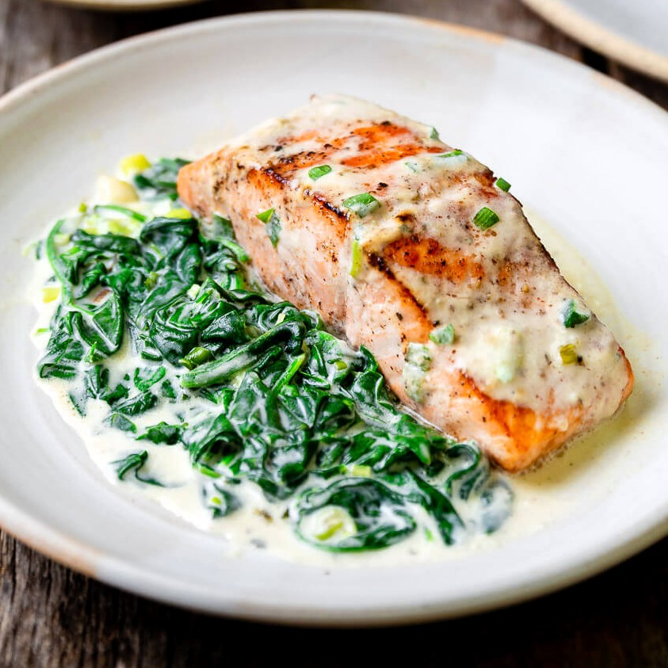

Index
Salmon with Spinach

Description
Salmon is my favorite fish. And I happen to like spinach. I do
not like when recipe websites get into prose about things
unrelated to the recipe. So without further ado...
Ingredients
- Oil, 1 teaspoon
- Salmon, two 4-oz fillets
- Salt
- Pepper
- Butter, 1 tablespoon
- Lemon juice, 1 teaspoon
- Spinach
Prep
- Thaw the salmon in the refrigerator 24 hours in advance
Steps for Cooking the Salmon
- Bring the salmon to room temperature 10 minutes before
cooking
- Warm a large nonstick skillet with oil over medium-low heat
- Pat the fish on both sides with paper towels to get rid of
excess water
- Season the fish on both sides with salt and pepper
- Raise the heat to medium-high and place the salmon skin-side
up in the pan
- Cook until golden brown on 1 side, about 4 minutes
- With 1 minute remaining on the first side, place butter
in the pan
- Turn the fish over and place lemon juice in pan
- Cook until desired crispness, about 3 minutes
Steps for Cooking the Spinach
- Bring the temperature down to low
- Place spinach in the same skillet
- Saute until desired texture